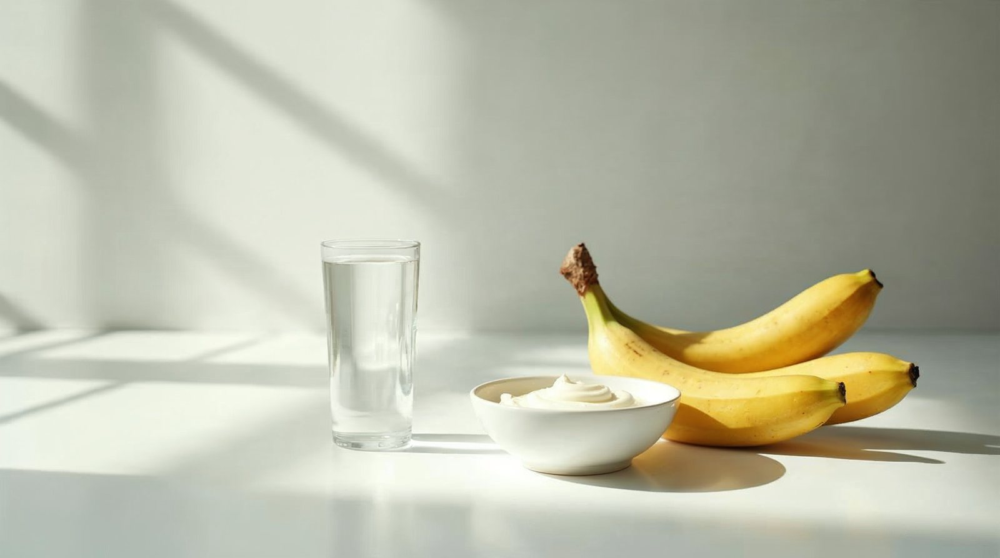
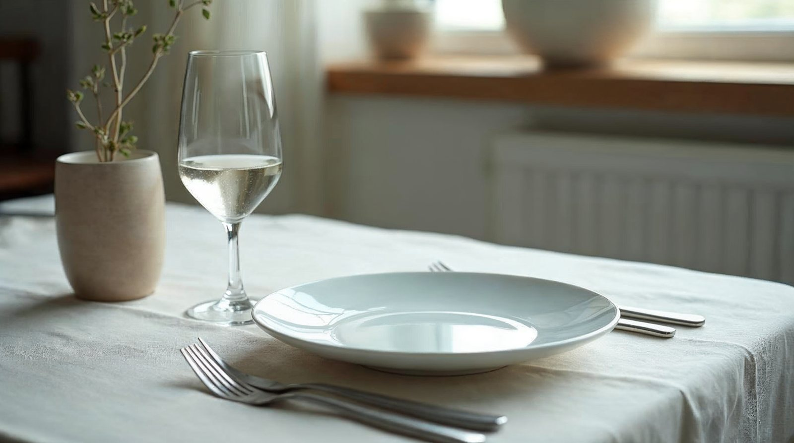
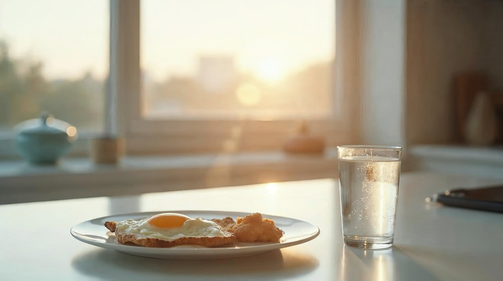
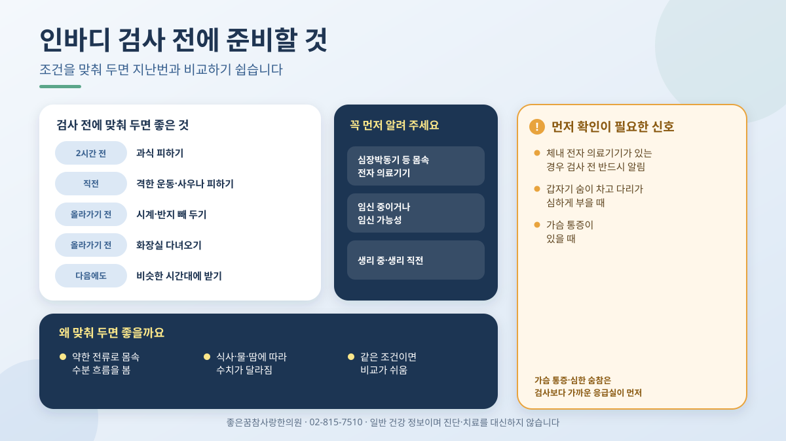

이종호 한의사 감수좋은꿈참사랑한의원 대표원장 (한의사 면허번호 19769)발행 2026-11-23 · 수정 2026-11-26
이 글의 차례
- 왜 미리 준비하면 좋을까요
- 먼저 이렇게 여쭙니다
- 스스로 점검해 보세요
- 일상에서 먼저 해 볼 수 있는 것
- 검사 전날과 당일은 어떻게 보내면 좋을까요?
- 같은 사람인데 왜 숫자가 달라질까요?
- 상황별 예시
- 처음 재는 날과 다시 재는 날은 무엇이 다른가요?
- 걱정이 많으신 분께 드리는 말씀
- 검사를 미루거나 바로 확인해야 할 때
- 측정 당일 이런 점은 그냥 두셔도 됩니다
- 왜 맨발과 손잡이 자세가 중요할까요?
- 한의원에서 함께 살필 수 있는 경우
- 측정 조건은 이렇게 남겨 두세요
- 결과지를 받은 뒤에는 이렇게 이어집니다
- 이렇게 기록해 오시면 상담이 쉬워집니다
- 이런 증상은 먼저 확인이 필요합니다
- 함께 읽으면 좋은 글
인바디 검사는 맨발로 올라가 손잡이를 잡고 잠시 서 있으면 끝나지만, 몸속 수분 상태에 따라 수치가 달라질 수 있어 검사 전 몇 가지를 맞춰 두면 지난번과 비교하기가 훨씬 쉬워집니다. 특히 심장박동기 같은 체내 전자 의료기기가 있거나 임신 중이라면 검사 전에 꼭 알려 주셔야 합니다.
좋은꿈참사랑한의원에서는 인바디 770으로 체성분을 잽니다. 이 글에서는 검사 당일에 맞춰 두면 좋은 조건, 검사를 미루거나 먼저 상의해야 하는 경우, 처음 오신 날 검사가 어떤 순서로 진행되는지를 정리했습니다. 측정 비용이나 보험 적용 여부는 방문 전 전화로 확인해 주세요.
왜 미리 준비하면 좋을까요
- 체성분 검사는 몸에 아주 약한 전류를 흘려 수분의 흐름으로 몸 구성을 추정하는 방식이라, 직전 식사나 물, 땀 흘린 정도에 따라 수치가 흔들릴 수 있습니다.
- 운동이나 사우나 직후에는 몸의 수분 분포가 평소와 달라집니다.
- 시계·반지 같은 금속이나 손발이 지나치게 건조한 상태는 측정 접촉에 영향을 줄 수 있습니다.
- 심장박동기 같은 전자 의료기기가 있으면 검사를 하지 않는 것이 원칙이라 먼저 확인합니다.
- 결과지의 체중에는 입고 있는 옷과 주머니 속 물건의 무게도 더해져, 두꺼운 겨울옷을 입은 날과 얇은 옷을 입은 날은 그대로 비교하기 어렵습니다.
- 추운 날 손발이 차고 피부가 바짝 마른 채로 바로 재면 전극에 닿는 상태가 평소와 달라질 수 있어, 실내에서 잠시 몸을 녹인 뒤 잽니다.

먼저 이렇게 여쭙니다
- 검사 직전에 식사를 하셨나요?
- 오늘 운동을 하거나 사우나·목욕을 다녀오셨나요?
- 몸에 심장박동기 같은 전자 의료기기가 있나요?
- 임신 중이거나 임신 가능성이 있나요?
- 생리 중이거나 생리 직전이신가요?
- 수술로 넣은 금속 고정물이나 인공관절이 있나요?
스스로 점검해 보세요
- 심장박동기처럼 몸속에 넣은 전자 의료기기가 있다
- 임신 중이거나 그 가능성이 있다
- 검사 직전 두세 시간 안에 식사를 든든히 했다
- 오늘 운동을 했거나 사우나·목욕을 다녀왔다
- 언덕길이나 계단을 서둘러 올라와 아직 숨이 차다
- 두꺼운 옷을 겹쳐 입었고 주머니에 휴대전화나 열쇠가 있다
- 생리 중이거나 생리 직전이다
앞의 두 가지는 접수 때 꼭 먼저 말씀해 주세요. 나머지는 검사를 미루거나, 그날의 조건을 기록해 두고 결과를 볼 때 함께 고려하면 됩니다.

일상에서 먼저 해 볼 수 있는 것
- 검사 전 2시간 정도는 과식 피하기
- 검사 직전 격한 운동이나 사우나 피하기
- 시계, 반지 같은 금속 장신구 빼 두기
- 검사 전 화장실 다녀오기
- 다음 검사도 비슷한 시간대에 받기
- 벗기 쉬운 양말과 가벼운 옷차림으로 오기
검사 당일에는 맨발로 발판에 올라 손잡이를 잡아야 해서 스타킹이나 압박 양말보다 벗기 쉬운 양말이 편합니다. 손발이 많이 건조한 날은 미리 말씀해 주시면 측정 전에 접촉 상태를 함께 확인합니다. 도착하면 잠시 앉아 숨을 고르고, 화장실을 다녀온 뒤 재는 흐름이 가장 무난합니다.
검사 전날과 당일은 어떻게 보내면 좋을까요?
전날 저녁에는 평소처럼 드시되, 아주 짜거나 늦은 야식은 피해 주세요. 짠 음식과 술은 다음 날 몸이 물을 붙잡아 두게 만들어 체수분과 체중이 평소보다 조금 높게 나올 수 있습니다. 잠도 평소 시각에 드시는 편이 좋습니다.
당일 아침에는 늘 드시던 식사를 하셔도 괜찮고, 검사까지 두 시간 정도 간격만 두시면 됩니다. 물은 갈증을 참을 만큼 줄이기보다 평소처럼 조금씩 드시면 됩니다.
추운 날 언덕길을 걸어오셨다면 외투를 벗고 10분쯤 앉아 숨을 고르신 뒤 재시길 권합니다. 손이 차면 두 손을 비비거나 잠시 겨드랑이에 끼워 데우시면 됩니다. 뜨거운 물에 손을 오래 담그면 땀이 나서 오히려 방해가 될 수 있습니다.
평소 드시는 약은 검사 때문에 거르지 마세요. 약 이름과 드시는 시간을 접수 때 알려 주시면, 결과를 읽을 때 함께 참고합니다.
같은 사람인데 왜 숫자가 달라질까요?
체성분 장비는 몸에 흐르는 아주 약한 전류가 얼마나 잘 통하는지로 몸 구성을 추정합니다. 물은 전류를 잘 통하게 하고 지방은 덜 통하게 해서, 몸속 물의 양과 위치가 바뀌면 근육과 지방 숫자도 함께 조금씩 달라집니다.
그래서 아침에 일어나 바로 잰 숫자와 저녁에 잰 숫자, 운동 전과 후의 숫자는 같은 몸이라도 다르게 나올 수 있습니다. 저는 이 차이를 오류로 보기보다 측정 조건을 맞춰야 하는 이유로 설명드립니다.
예를 들어 지난번에 아침 공복으로 쟀는데 이번에는 점심 직후에 쟀다면, 체중과 체수분이 조금 올라가 보여도 그 차이를 그대로 몸의 변화로 읽기는 어렵습니다. 비교는 늘 비슷한 조건끼리 하는 것이 원칙입니다.

상황별 예시
- 예를 들어 점심시간에 잠깐 들르는 직장인이 식사 직후 바로 오신 경우라면, 그날은 상담과 진맥을 먼저 하고 검사는 다음 방문으로 미루기도 합니다. 지난번 측정이 오전이었다면 다음에도 되도록 비슷한 시간대로 맞춥니다.
- 예를 들어 헬스장에서 운동을 마치고 곧장 오신 경우라면, 수분 분포가 평소와 달라져 있을 수 있어 그날 숫자는 참고로만 보고 다음에는 운동 전에 재시도록 권합니다.
- 예를 들어 심장 시술을 받은 적은 있는데 어떤 기기를 넣었는지 기억이 흐린 어르신이라면, 확인될 때까지 검사를 하지 않습니다. 보호자와 함께 오시거나 다니시는 병원의 진료 기록을 챙겨 오시면 확인이 수월합니다.
처음 재는 날과 다시 재는 날은 무엇이 다른가요?
처음 재는 날은 지금 몸의 출발점을 남기는 날입니다. 그래서 그날의 조건을 자세히 적어 두는 데 마음을 씁니다. 숫자가 기대와 다르게 나와도 놀라실 필요는 없습니다. 기준점이 있어야 다음 변화가 보이기 때문입니다.
다시 재는 날은 지난번과 비교하는 날이라, 무엇보다 조건을 맞추는 것이 중요합니다. 지난번이 오전 열 시, 아침 식사 뒤 두 시간이었다면 이번에도 되도록 그 시간대에 맞춰 예약해 주세요. 옷차림과 양말까지 비슷하면 더 좋습니다.
예를 들어 처음에는 여름에 얇은 옷으로 쟀는데 겨울에 다시 재는 경우라면, 두꺼운 겉옷과 주머니 속 물건을 미리 빼 두시면 체중 차이를 줄일 수 있습니다. 계절이 바뀌면 활동량과 물 마시는 양도 달라져, 그 이야기도 함께 여쭙습니다.
걱정이 많으신 분께 드리는 말씀
측정을 앞두고 숫자가 나쁘게 나올까 봐 며칠 전부터 굶거나 물을 줄이는 분이 계십니다. 그렇게 하면 그날 숫자만 흔들리고, 오히려 지금 몸의 모습을 정확히 남기기 어려워집니다. 평소처럼 지내다 오시는 것이 가장 좋은 준비입니다.
검사를 미루거나 바로 확인해야 할 때
- 식사 직후, 운동·사우나 직후, 손발이 꽁꽁 언 채로 도착하셨다면 그날 검사는 미루거나 조건을 기록해 두고 참고로만 봅니다.
- 생리 중이나 직전에 쟀다면 그 숫자 하나로 판단하지 않고, 주기가 지난 뒤 같은 조건에서 다시 재어 비교합니다.
- 다시 잴 때는 몇 주 간격으로 비슷한 시간대와 식사 간격을 맞추면 흐름을 보기 쉽습니다.
- 수술로 넣은 금속 고정물이나 인공관절이 있다면 재기 전에 바로 말씀해 주세요. 측정 여부와 결과를 읽는 방법을 함께 상의하고, 그 부위의 숫자는 참고로만 보는 것이 좋을 수 있습니다.
측정 당일 이런 점은 그냥 두셔도 됩니다
준비할 것이 많아 보여도 모든 조건을 완벽하게 맞출 필요는 없습니다. 커피 한 잔을 드셨거나, 아침에 가볍게 걸어서 오셨거나, 평소보다 조금 늦게 일어나신 정도라면 그대로 재고 그 사실만 적어 두면 됩니다.
중요한 것은 조건을 완벽하게 만드는 것보다 무엇이 달랐는지를 아는 것입니다. 기록이 있으면 숫자가 조금 다르게 나와도 그 이유를 짐작할 수 있고, 다음에는 그 부분만 맞추면 됩니다.
예를 들어 지난번보다 체수분이 조금 높게 나왔는데 전날 저녁에 짠 찌개를 드셨다는 기록이 있다면, 그 숫자 하나로 몸이 부었다고 판단하지 않고 다음 측정에서 다시 확인합니다. 저는 결과지와 함께 이런 메모를 볼 때 설명드리기가 훨씬 쉬워집니다.
왜 맨발과 손잡이 자세가 중요할까요?
체성분 장비는 발바닥과 손바닥에 닿는 전극으로 전류를 주고받습니다. 그래서 발이 발판의 전극 위에 바르게 놓이고, 손잡이를 엄지와 손가락으로 고르게 감싸 쥐어야 측정이 안정적으로 이루어집니다.
팔은 몸통에 붙이지 말고 겨드랑이가 살짝 떨어지도록 벌린 채 서 계시면 됩니다. 허벅지끼리 많이 닿는 분은 다리를 조금 벌려 서시면 좋습니다. 처음이라 자세가 헷갈리시면 측정 전에 자세를 함께 잡아 드립니다.
측정하는 동안 말을 하거나 몸을 움직이면 숫자가 흔들릴 수 있어, 편하게 숨을 쉬며 잠시 기다려 주세요. 다음에 재실 때도 같은 자세를 취하시면 비교하기가 더 쉬워집니다.
한의원에서 함께 살필 수 있는 경우
- 체중 관리를 시작하면서 지금 상태를 기록해 두고 싶은 경우 체성분 검사를 기준점으로 삼아 함께 살핍니다.
- 식사를 줄였는데 기운이 빠지는 경우 체성분 변화와 식사 구성을 함께 살핍니다.
- 몸이 자주 붓는 경우 체수분 흐름과 생활 습관을 함께 살핍니다.
좋은꿈참사랑한의원에서는 검사 전에 위의 확인 사항을 먼저 여쭙고, 필요하다고 판단될 때 인바디 770으로 측정합니다. 결과는 진료실에서 생활 이야기와 함께 설명해 드리고, 다음 측정 때 비교하기 쉽도록 그날의 측정 조건도 기록해 둡니다.
처음 오신 날의 흐름은 이렇습니다. 접수 때 몸속 전자 의료기기, 금속 고정물, 임신 가능성이 있는지 먼저 말씀해 주세요. 진료실에서는 맥부터 짚고, 맥을 짚으면서 고민과 생활을 여쭙습니다.
측정이 필요하다고 판단되면 신발과 양말을 벗고 시계·반지를 뺀 다음, 앞에서 말씀드린 자세로 발판에 올라 손잡이를 잡고 잠시 서 계시면 됩니다.
측정 조건은 이렇게 남겨 두세요
결과지 여백이나 휴대전화 메모에 다섯 가지만 적어 두면 충분합니다. 잰 시각, 마지막 식사 시각, 그날 운동이나 목욕 여부, 생리 주기, 입은 옷의 두께입니다. 한 줄이면 됩니다.
여유가 있으면 요즘 잠은 어떤지, 바지 허리가 어떻게 느껴지는지도 한 줄 보태 주세요. 숫자만 남은 종이보다 그 한 줄이 붙은 종이가 다음 진료에서 훨씬 많은 이야기를 해 줍니다.
결과지를 받은 뒤에는 이렇게 이어집니다
측정이 끝나면 결과지는 진료실에서 함께 봅니다. 처음 재신 날이라면 체중·골격근량·체지방량 세 막대가 표준 범위 표시의 어디쯤 있는지부터 설명드리고, 그날 적어 둔 측정 조건도 함께 확인합니다.
집에 가져가신 결과지는 버리지 말고 날짜가 보이게 모아 두세요. 다음 측정 때 지난 결과지와 조건 메모를 나란히 놓으면, 숫자가 몸의 변화인지 조건의 차이인지를 훨씬 쉽게 가려낼 수 있습니다.
다른 곳에서 잰 결과지가 있다면 사진으로 찍어 오셔도 괜찮습니다. 다만 장비와 측정 조건이 다르면 숫자를 그대로 견주기는 어려워, 그때의 흐름을 이해하는 참고 자료로 함께 봅니다.
궁금한 칸이 생기면 결과지에 동그라미를 쳐서 다음 진료 때 가져와 주세요. 그 칸부터 함께 봅니다.
이렇게 기록해 오시면 상담이 쉬워집니다
- 마지막 식사 시각과 오늘 운동 여부
- 지난 체성분 결과지(있다면)
- 몸속 의료기기·금속 고정물과 임신 여부
- 체성분 검사로 확인하고 싶은 점
다음에 오시면 지난번 측정 조건과, 그사이 지내 오신 이야기 한 가지부터 여쭙겠습니다. 해 보니 어려웠던 것, 아직 잘 모르겠는 것 무엇이든 괜찮습니다. 그 이야기를 들으며 다시 맥을 짚고, 결과지를 함께 펼쳐 보겠습니다.
이런 증상은 먼저 확인이 필요합니다
- 가슴이 아프거나 갑자기 숨이 심하게 찬 경우
- 다리가 갑자기 심하게 붓거나, 한쪽 다리만 붓고 아픈 경우
이런 신호가 있으면 한의원보다 가까운 병원이나 응급실을 먼저 찾으세요.
함께 읽으면 좋은 글

여쭙는 것
- 검사 직전에 식사를 하셨나요?
- 오늘 운동을 하거나 사우나·목욕을 다녀오셨나요?
- 몸에 심장박동기 같은 전자 의료기기가 있나요?
생활에서 해 볼 것
- 검사 전 2시간 정도는 과식 피하기
- 검사 직전 격한 운동이나 사우나 피하기
- 시계, 반지 같은 금속 장신구 빼 두기
한의원에서 함께 살필 것
- 체중 관리를 시작하면서 지금 상태를 기록해 두고 싶은 경우 체성분 검사를 기준점으로…
- 식사를 줄였는데 기운이 빠지는 경우 체성분 변화와 식사 구성을 함께 살핍니다.
- 몸이 자주 붓는 경우 체수분 흐름과 생활 습관을 함께 살핍니다.
먼저 확인이 필요한 신호
- 가슴이 아프거나 갑자기 숨이 심하게 찬 경우
- 다리가 갑자기 심하게 붓거나, 한쪽 다리만 붓고 아픈 경우
한눈에 보는 표
| 구분 | 핵심 |
|---|---|
| 여쭙는 것 | 검사 직전에 식사를 하셨나요? 오늘 운동을 하거나 사우나·목욕을 다녀오셨나요? |
| 생활에서 해 볼 것 | 검사 전 2시간 정도는 과식 피하기 검사 직전 격한 운동이나 사우나 피하기 |
| 한의원에서 함께 살필 것 | 체중 관리를 시작하면서 지금 상태를 기록해 두고 싶은 경우 체성분 검사를 기준점으로 삼아 함께 살핍니다. 식사를 줄였는데 기운이 빠지는 경우 체성분 변화와 식사 구성을 함께 살핍니다. |
| 먼저 확인이 필요한 신호 | 가슴이 아프거나 갑자기 숨이 심하게 찬 경우 다리가 갑자기 심하게 붓거나, 한쪽 다리만 붓고 아픈 경우 |
자주 묻는 질문
임신 중에도 인바디 검사를 해도 되나요?
임신 중이거나 가능성이 있다면 검사 전에 꼭 말씀해 주세요. 검사가 필요한지부터 먼저 상의합니다.
꼭 공복에 재야 하나요?
꼭 공복일 필요는 없지만, 비교를 위해 매번 비슷한 조건(식사 후 비슷한 간격, 비슷한 시간대)에서 재는 것을 권합니다.
검사는 얼마나 걸리나요?
맨발로 올라가 손잡이를 잡고 잠시 서 있으면 끝나는 짧은 검사입니다. 결과는 진료실에서 함께 봅니다.
생리 중에 재면 결과가 달라지나요?
생리 전후에는 몸의 수분이 달라져 수치가 조금 흔들릴 수 있어, 그 시기에 쟀다면 결과를 볼 때 함께 고려합니다.
좋은꿈참사랑한의원은 재진 때 지난번 이야기부터 이어서 여쭙니다. 진료시간과 예약은 오시는 길에서 확인하세요.
어디서 상담받을 수 있나요?
좋은꿈참사랑한의원은 서울 동작구 만양로2길 2 신성빌딩 3층·5층(서울 동작구 상도동, 7호선 상도역 3번 출구 근처)에 있습니다. 한의사 3명(이종호 대표원장, 조영기 수석진료원장, 정원영 진료원장)이 진료합니다. 진료시간은 평일 09:30~20:00(점심 13:00~14:00), 토·일·공휴일 09:30~15:00이며, 방문 전 전화로 확인을 권합니다. 예약은 네이버 예약, 카카오톡 상담, 전화 02-815-7510로 받습니다.
이 글은 일반적인 건강 정보이며 개인의 진단이나 치료를 대신하지 않습니다. 증상이 있거나 복용 중인 약이 있다면 진료를 통해 확인하세요. 치료 효과는 개인마다 다를 수 있습니다.
작성 기준: 일반적으로 알려져 있는 건강 정보를 참고해 정리했습니다(대표원장 감수). 증상 기록은 1~2주 동안 하루 1회, 비슷한 시간에 적어 오시면 지난 상태와 비교하기 쉽습니다.